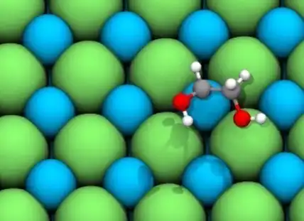
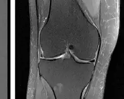
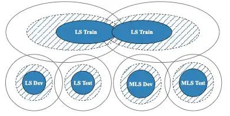

Datasets
-

-
Open DAC 2023 (ODAC23)
Direct Air Capture (DAC) involves directly capturing carbon dioxide from the atmosphere and has been widely recognized as a crucial tool in combating climate change. Despite its potential, the broad implementation of DAC has been impeded by high capture costs. Key to overcoming this hurdle is the discovery of novel sorbents — materials that pull carbon dioxide from the air. Discovering new sorbents holds the key to reducing capture costs and scaling DAC to meaningfully impact global carbon emissions. The DAC space is growing rapidly with many companies entering the space. To engage the broader research community as well as the budding DAC industry, we have released the OpenDAC 2023 (ODAC23) dataset to train ML models. ODAC23 contains nearly 40M DFT calculations from 170K DFT relaxations involving Metal Organic Frameworks (MOFs) with carbon dioxide and water adsorbates. We have also released SOTA GNN models trained on this dataset.
- 
-
Open Catalyst 2020 (OC20) & Open Catalyst 2022 (OC22)
Scalable and cost-effective solutions to renewable energy storage are essential to addressing the world's rising energy needs while reducing climate change. As we increase our reliance on renewable energy sources such as wind and solar, which produce intermittent power, storage is needed to transfer power from times of peak generation to peak demand. This may require the storage of power for hours, days, or months. One solution that offers the potential of scaling to nation-sized grids is the conversion of renewable energy to other fuels, such as hydrogen. To be widely adopted, this process requires cost-effective solutions to running chemical reactions.<br><br> An open challenge is finding low-cost catalysts to drive these reactions at high rates. Through the use of quantum mechanical simulations (density functional theory), new catalyst structures can be tested and evaluated. Unfortunately, the high computational cost of these simulations limits the number of structures that may be tested. The use of AI or machine learning may provide a method to efficiently approximate these calculations, leading to new approaches in finding effective catalysts.<br><br> To enable the broader research community to participate in this important project, we have released the Open Catalyst 2020 (OC20) and 2022 (OC22) datasets for training ML models, along with baseline models and code. These datasets altogether contain 1.3 million molecular relaxations with results from over 260 million DFT calculations.
- 
-
fastMRI Dataset (Knee & Brain MRIs)
Accelerating Magnetic Resonance Imaging (MRI) by taking fewer measurements has the potential to reduce medical costs, minimize stress to patients and make MRI possible in applications where it is currently prohibitively slow or expensive. By producing accurate images from under-sampled data, AI can be used to speed up MR image acquisition by upto 10x or more.<br/><br/> To enable the broader research community to participate in this important project, we released datasets containing roughly 1,500 fully sampled knee MRIs, and 7,000 fully sampled brain MRIs, in addition to DICOM images from 10,000 clinical knee MRIs.
- 
-
Multilingual LibriSpeech (MLS)
Multilingual LibriSpeech (MLS) dataset is a large corpus for multilingual speech research consisting of 50K hours of labeled speech from 8 languages - English, German, Dutch, Spanish, French, Italian, Portuguese, Polish. MLS was derived from read audiobooks from LibriVox. Language Models (LM) and baseline Automatic Speech Recognition (ASR) models and for all the languages in our dataset